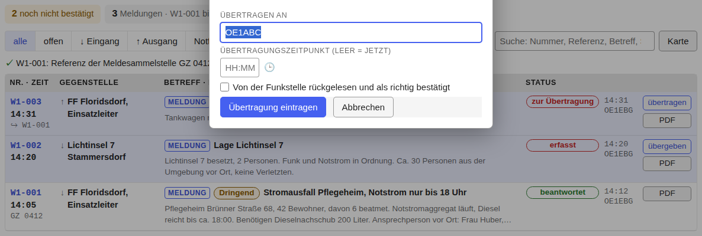
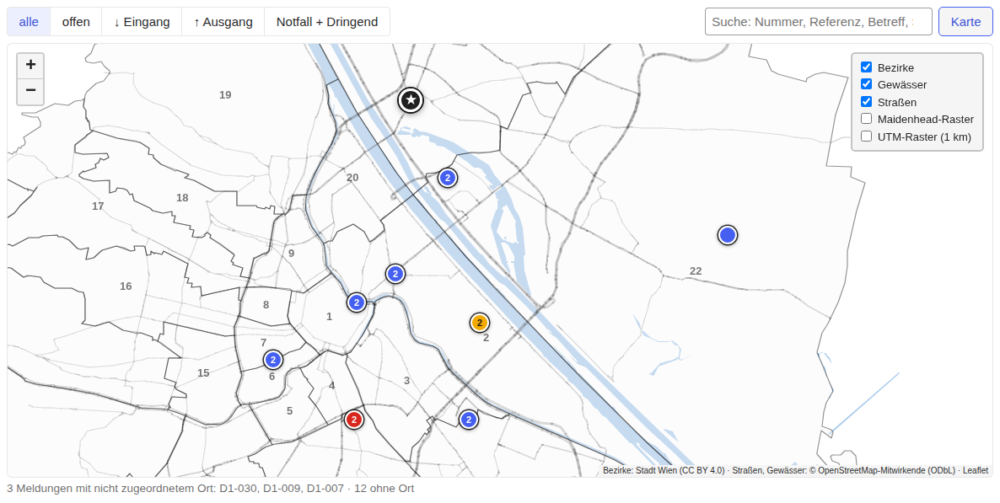
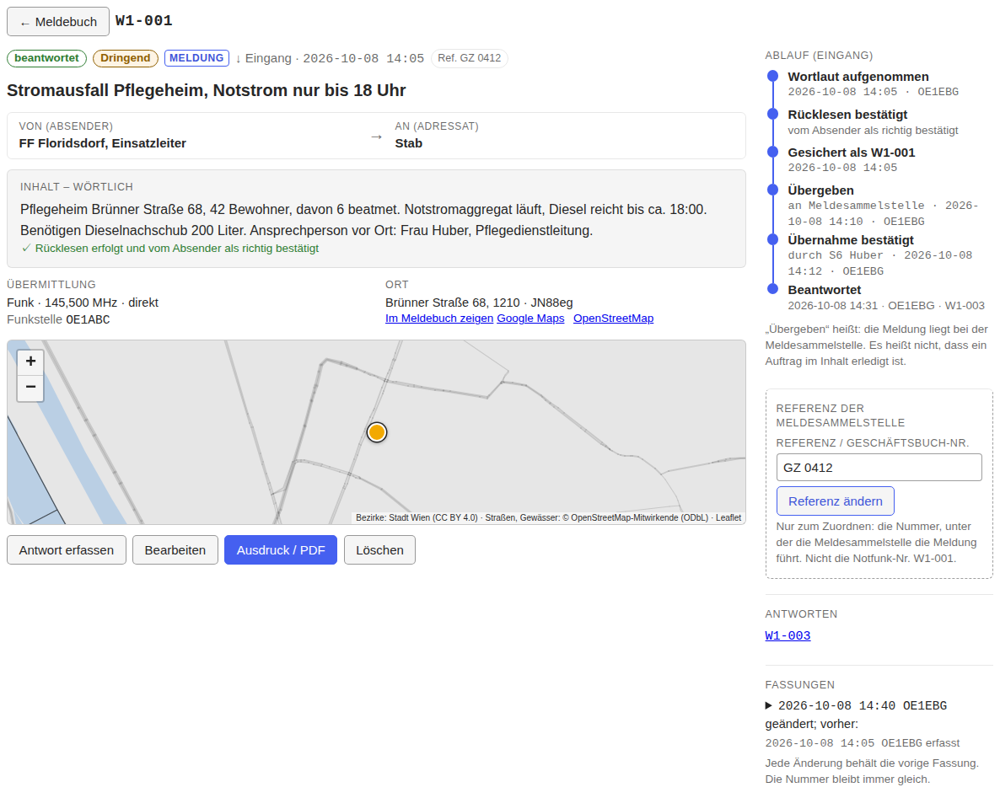

Das Meldebuch
← Notfunk-Anleitung · Notfunk-Meldebuch öffnen

Das Meldebuch zeigt alle Meldungen eines Einsatzes, die neuesten zuerst. Oben steht die Zusammenfassung: offene Notfälle, noch nicht bestätigte Meldungen, die Nummern und ob sie lückenlos sind. Mit den Filtern (alle, offen, Eingang, Ausgang, Notfall + Dringend) und der Suche (Nummer, Referenz, Betreff, Station, Text) finden Sie eine Meldung schnell.
Eine Zeile lesen
- Nr. · Zeit: die Notfunk-Nummer, darunter die Zeit (Ortszeit Wien), die Referenz der Meldesammelstelle und bei einer Antwort „↪“ mit der Nummer der Meldung, auf die sie antwortet.
- Gegenstelle: die andere Seite, mit ↓ (Eingang: von ihr) oder ↑ (Ausgang: an sie).
- Betreff · Inhalt: Meldungsart, Dringlichkeit (rot Notfall, gelb Dringend), Betreff und der Anfang des Inhalts.
- Status: der Stand der Meldung, mit Zeit und Operator des letzten Schritts.
- Ganz rechts der nächste Schritt und PDF (die Meldung als Formular).
Am Handy ist jede Meldung eine Karte mit denselben Angaben.
Der Status
Der Status hängt von der Richtung ab:
| Richtung | 1 | 2 | 3 | danach |
|---|---|---|---|---|
| ↓ Eingang | erfasst | übergeben | übernommen | beantwortet |
| ↑ Ausgang | zur Übertragung | übertragen | Empfang bestätigt | beantwortet |
Der Knopf in der Zeile („übergeben“, „Übernahme bestätigt“, „übertragen“, „Empfang bestätigt“) öffnet ein kleines Fenster für diesen Schritt: an wen bzw. durch wen, der Zeitpunkt (leer = jetzt) und bei „Übernahme bestätigt“ die Referenz der Meldesammelstelle, wenn sie genannt wird. Enter trägt ein, Esc schließt ohne Eintrag.
„Beantwortet“ entsteht von selbst, sobald eine Antwort mit Bezug auf die Meldung gespeichert wird.
Die Karte

Im Bild der Beispiel-Einsatz zum Ausprobieren (notfunk-full.json, über „Wiederherstellen…“ einspielen).
„Karte“ (neben der Suche) zeigt die Meldungen der aktuellen Auswahl an ihrem Ort, auf einer Wien-Karte, die auch ohne Internet funktioniert. Die Farbe eines Punkts ist die höchste Dringlichkeit: rot Notfall, gelb Dringend, blau Routine. Eine Zahl auf dem Punkt heißt: mehrere Meldungen am selben Ort. Mit der Maus darüber (am Handy: antippen) sehen Sie Nummer, Zeit, Betreff und Status; die Nummer führt zur Meldung. Der Stern ist der Standort Ihrer Station. Unter der Karte steht, welche Meldungen keinen Ort haben.
Eine Meldung im Detail

Ein Klick auf die Zeile (oder die Nummer) öffnet die Meldung: oben Status, Art, Richtung und Zeit, dann Von → An, der Wortlaut, darunter Übermittlung, Ort (mit kleiner Karte), Ursprung und Anmerkungen. Rechts steht der Ablauf: wann und von wem die Meldung erfasst, übergeben bzw. übertragen und bestätigt wurde.
- Eingang: „Übergeben an“ (z. B. die Meldesammelstelle), dann „Übernommen durch“ und, wenn genannt, die Referenz der Meldesammelstelle.
- Ausgang: „Übertragen an“ (die Funkstelle), ggf. ob sie zurückgelesen hat, dann „Empfang bestätigt durch“. Klappt eine Übertragung nicht oder gibt es eine Rückfrage: „Fehlversuch / Rückfrage eintragen“.
- Zeitpunkt leer = jetzt; sonst die Uhrzeit, z. B.
14:10.
Referenz der Meldesammelstelle: die Nummer, unter der die
Meldesammelstelle die Meldung in ihrem Geschäftsbuch führt. Tragen Sie sie
ein, sobald sie zurückgemeldet wird; so lassen sich die beiden Listen
zuordnen. Die Notfunk-Nummer (W1-007) ist nicht die
Geschäftsbuchnummer.
Weitere Knöpfe bei der Meldung:
- Antwort erfassen: Richtung, Absender und Adressat sind vertauscht, der Bezug ist gesetzt.
- Bearbeiten: korrigiert die Meldung; die vorige Fassung bleibt gespeichert.
- Ausdruck / PDF: siehe Ausdruck und PDF.
- Löschen: die Meldung verschwindet aus der Liste, ihre Nummer bleibt vergeben und wird nie wieder verwendet. Unter „Gelöschte Meldungen“ lässt sie sich wiederherstellen.
Weiter: Ausdruck und PDF